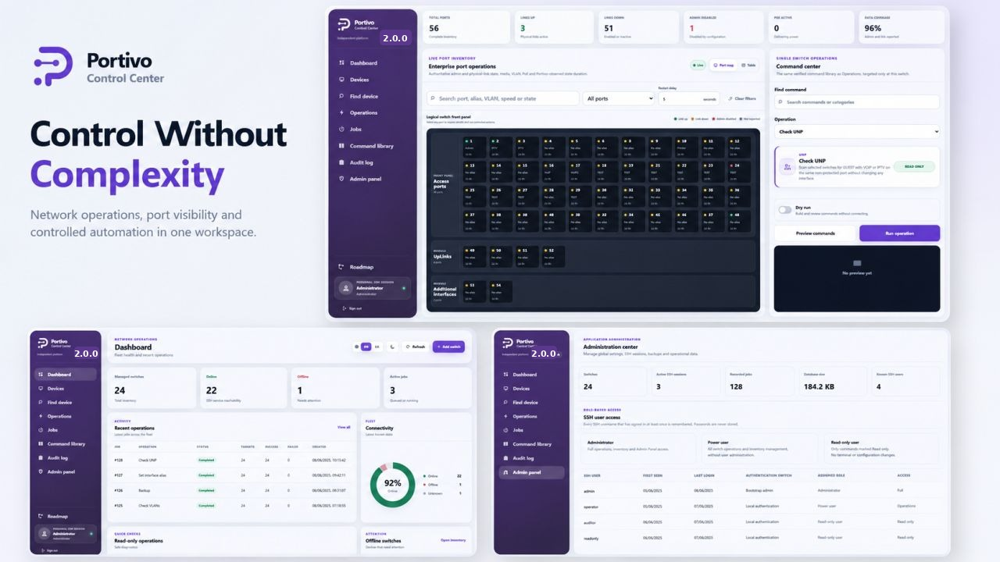

Know the estate
Maintain a central switch inventory organized by Site and Group. Track management identity, AOS family, availability, stack context and the latest observed state without storing shared credentials for normal user operations.
Portivo brings compatible ALE OmniSwitch fleets into one clear operational workspace for finding devices, diagnosing ports, executing controlled actions and preserving evidence.

Portivo combines the tasks operators repeat every day while keeping device access, authorization, execution and evidence inside one consistent control path.
Maintain a central switch inventory organized by Site and Group. Track management identity, AOS family, availability, stack context and the latest observed state without storing shared credentials for normal user operations.
Open a logical front panel with administrative state, carrier, alias, VLAN, media and PoE information. Supported stack members remain separate so the interface map reflects the actual chassis.
Search by MAC, IP, hostname, UNP identity or VLAN. Correlate ARP, forwarding, UNP and LLDP evidence, then rank likely edge locations without presenting an upstream observation as a physical endpoint.
Collect read-only link, media, error, PoE, MAC, UNP and neighbor evidence for one port. Unknown device output remains unreported instead of being converted into an unsupported conclusion.
Resolve actions against the detected AOS family, preview exact target commands, serialize work per switch and preserve a Job record for every target. Different switches can proceed concurrently without overlapping work on one device.
Monitor assigned UPS infrastructure through SNMPv3, route confirmed incidents to independent destinations and correlate switch loss with power evidence only when the available telemetry supports it.
One continuous workflow keeps the target, evidence, command preview, execution and audit history connected.
Search by MAC, IP, hostname, UNP identity or VLAN and correlate live fleet evidence.
→Inspect link state, media, counters, PoE, LLDP, MAC and recent activity in one read-only view.
→Preview verified catalog actions, choose targets explicitly and keep work inside per-device queues.
→Connect jobs, audit history, fleet findings and PDF reports to the action that created them.
Deep operational support without turning every task into a collection of disconnected utilities.
A logical front panel with live state, VLAN, media and controlled port actions.
Learn more →Evidence-led endpoint location with live SSH correlation and edge-port ranking.
Learn more →Nine read-only operational assessments with conservative evidence handling.
Learn more →Approved runbooks, variables, target limits, concurrency policy and schedules.
Learn more →Built-in and custom roles with exact capabilities and server-enforced scope.
Learn more →SNMPv3 UPS telemetry, incidents and protected-switch correlation.
Learn more →Portivo also covers the role normally handled by a separate desktop SSH client. Authorized engineers can open a persistent interactive terminal to a scoped switch, work directly with the native AOS CLI and keep device access inside the same secure operational workspace.
switch-01 login established
> show system
System name: switch-01
AOS family: AOS 8
Operational state: UP
> show interfaces status
Native CLI output streams directly
through the protected browser session.
>
Manual work, automation and audits use the same durable execution model, so operators can distinguish intent, progress, result and configuration persistence.
Choose an eligible action, explicit devices and only the parameters required by that action.
Review target-specific commands, compatibility evidence and the number of affected switches before execution.
Create a Job with one item per target. Per-device FIFO coordination prevents overlapping automated or terminal work.
Inspect output and terminal status, then use read-back evidence or a focused diagnostic to confirm the intended state.
Review pending configuration by switch and write to flash deliberately after operational validation.
Portivo treats AOS 6 and AOS 8 as independent command families, with dedicated driver identities, compatibility metadata and conservative runtime capability learning.
Portivo runs as one service on Windows or Linux. It is designed for a protected management network with direct reachability to managed switches and UPS devices.
A FastAPI service provides the browser interface, authenticated APIs, schedulers, monitoring workers and WebSocket terminal path.
Manual and automated switch work uses SSH. Power monitoring uses authenticated and encrypted SNMPv3 profiles.
SQLite stores inventory, policy, Jobs, audit history, incidents and latest observations. Full traffic time series remain outside the product data model.
Use a trusted reverse proxy for HTTPS and WebSocket forwarding. Restrict browser ingress to authorized management networks.
Start with requirements, network security and the complete installation sequence.
Self-hosted control stays inside your management boundary, with deliberate safeguards around identity, credentials and action execution.
Read the hardening guide →User SSH passwords are session-only and never become shared switch credentials.
Unattended credentials and webhook endpoints are protected by the application secret.
Operational changes remain tied to explicit targets, jobs and activity evidence.
Designed for trusted management networks. Terminate TLS at a trusted reverse proxy and never expose TCP 8766 directly to the public Internet.
Explore installation, operations, automation, security, drivers and the complete reference.